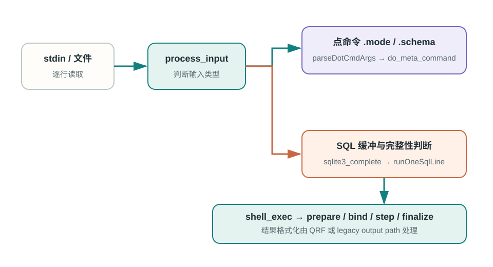
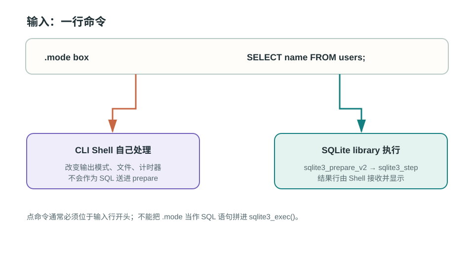
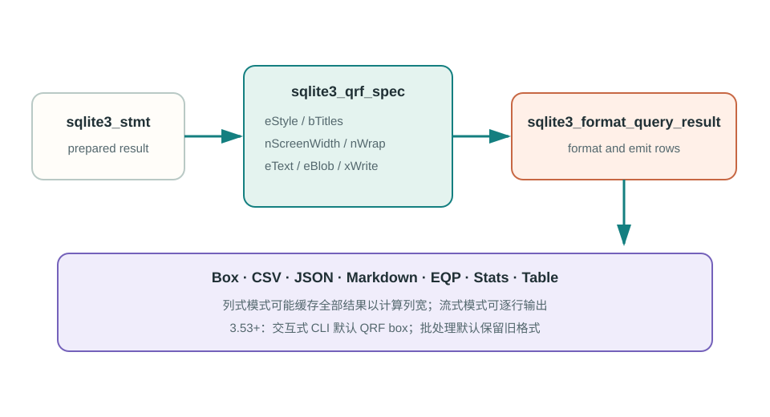

SQLite CLI 源码：输入循环、点命令与 QRF
sqlite3 命令行程序是 SQLite library 之上的独立应用。它把输入分流为 Shell 点命令或 SQL，再调用 prepare/step，并通过 QRF 或兼容输出路径呈现结果。沿 shell.c.in 追踪这条真实执行链。
1. 先分清 sqlite3 程序和 SQLite library
输入 sqlite3 app.db 启动的是 SQLite 项目提供的命令行 Shell（CLI）。它是一个用户态应用：读取终端或文件输入，提供交互提示、点命令、输出格式、文件导入导出和调试辅助，再调用 SQLite C API 执行 SQL。真正实现 SQL 解析、事务、B-tree 和 VFS 的是 SQLite library；CLI 并不是数据库内核的同义词。
这一区分决定了源码阅读路径：研究 .mode、.schema、.import 或提示符，应看 Shell；研究 sqlite3_prepare_v2()、sqlite3_step() 或 Pager，则应继续进入 SQLite library。官方 CLI 文档也明确把命令行程序与底层库区分开。

2. shell.c.in 怎样变成可编译的 shell.c？
SQLite canonical source tree 中，CLI 的主模板位于 src/shell.c.in。它通过 INCLUDE 指令引用若干源组件；tool/mkshellc.tcl 扫描模板和包含文件，收集点命令帮助文本，并把各部分合成为 shell.c。构建系统中的 make shell.c 就是这一生成路径的一部分。
这意味着读 Shell 不能只 grep 生成后的 amalgamated shell.c：应先读模板，再追踪 INCLUDE 的实现文件。反过来，若你要验证最终编译单元，也可以比较生成的 shell.c。这套流程与 SQLite library 的核心 sqlite3.c amalgamation 是不同产物，不要把两个生成过程混为一谈。
源码定位：mkshellc.tcl 的注释说明它从 src/shell.c.in 和其它组件生成 Shell 源文件；修改时应回到模板和组件，而不是只改生成文件。
3. process_input 如何区分点命令与 SQL？
输入处理的中心函数是 process_input()。它逐行读取输入，识别以点号开头的 Shell 命令；点命令由 do_meta_command() 解析参数并处理。普通 SQL 则被累计到语句缓冲区，利用 sqlite3_complete() 判断是否形成完整语句，再交给 runOneSqlLine()。多行 SQL 因此可以跨多行输入，直到完整后才执行。

do_meta_command() 内部调用 parseDotCmdArgs()，再按命令名处理参数。当前 3.54.1 源码并不是一个叫 aDotCommands 的万能函数指针分发表；读者应跟随真实函数和条件分支，而不是把教学伪代码当源码结构。
runOneSqlLine() 负责准备执行上下文、计时与错误报告，再调用 shell_exec()。后者通过 sqlite3_prepare_v2() 拆分/准备 SQL，绑定参数、执行语句并处理结果。函数名和行号随版本变化，本文以 3.54.1 的 do_meta_command、runOneSqlLine 和 process_input 为定位点。
4. 点命令是 Shell 语言，不是 SQL 方言
.mode、.headers、.eqp、.timer、.schema、.read、.import 都属于 CLI 的 dot commands。它们通常以点号开头并占据独立输入行。CLI 文档列出的命令超过 60 个，但这不是 SQLite SQL 语言的内置关键字集合，也不是应用程序通过 sqlite3_exec() 就能直接调用的接口。
.import 是 Shell 的文件解析和导入工作流，不存在一个可供应用直接调用、名字叫 sqlite3_import() 的核心 C API。若应用需要导入 CSV，应在自己的代码中解析文件、绑定参数并执行 INSERT，或使用 CLI 作为独立工具。
脚本中可以混合 SQL 和点命令，但它们由 Shell 分别解释。使用 --safe 或在应用层控制扩展加载权限时，要特别留意 .shell、.system、.load 等具有外部副作用的命令。参见官方 点命令与 SQL 规则。
5. QRF 如何格式化结果？
SQLite 3.53.0 在源码树中加入 Query Result Formatter（QRF），用于把 SQL 结果排成适合固定宽度终端阅读的表格。它不是一套虚构的 QRFormatter 类；公开接口是 sqlite3_qrf_spec 与 sqlite3_format_query_result()。spec 可描述输出样式、列宽、标题、对齐、文本/BLOB 编码和写出回调。

QRF 支持 box、column、CSV、JSON、Markdown、EQP、EXPLAIN、stats 等多种样式。一个容易忽略的实现取舍是：列式输出需要先知道整列宽度，因此会缓存整个查询结果；某些简单输出模式则可以逐行格式化。对海量查询结果，输出样式可能影响 Shell 自身内存占用。
3.53.0 起，交互式 CLI 默认使用 QRF 的 Unicode box 输出；批处理会保留旧输出格式以兼容脚本。也就是说，终端上看到的框线不属于 SQLite library 的 SQL 结果，也不应把批处理与交互式的默认输出差异误认为数据库行为变化。具体变更见 3.53.0 release notes。
6. 把 CLI 当作可组合的开发工具
以下脚本把 Shell 的状态设置和 SQL 查询放在同一个输入流中。它使用显式 .mode box，所以不依赖当前终端是否处于交互模式：
.headers on
.mode box
CREATE TABLE task(id INTEGER PRIMARY KEY, owner TEXT, state TEXT);
INSERT INTO task(owner,state) VALUES
('Ada','open'), ('Lin','done'), ('Mira','open');
CREATE INDEX task_state_owner ON task(state, owner);
.eqp on
SELECT owner FROM task WHERE state='open' ORDER BY owner;
.eqp off
.schema task
.mode json
SELECT id, owner, state FROM task ORDER BY id;可运行：sqlite3 :memory: < examples/23_cli_workflow.sql。观察 .eqp on 输出与 SELECT 结果分开显示；随后 .mode json 改变的是 Shell 的结果呈现，而不是查询结果的 SQL 类型。
源码追踪任务
- 从
process_input()追踪点命令分支和 SQL 缓冲区； - 从
runOneSqlLine()跳到shell_exec()； - 查看
ext/qrf/qrf.h中 spec 字段，再找到sqlite3_format_query_result()的实现； - 对比同一查询在交互式和批处理 CLI 下的默认输出。
自测：为什么 Python sqlite3.execute('.mode box') 会报 SQL 语法错误？
因为 .mode 是 CLI 的 dot command，只被 sqlite3 Shell 解释；Python 的 sqlite3 模块直接把字符串交给 SQLite library，后者只认识 SQL 和 PRAGMA，不认识 Shell 命令。
官方资料与版本边界
涉及源码内部符号时，以 SQLite 3.54.1 源码快照为定位基准；公开文档用于解释稳定接口和语义。内部函数、行号和构建配置会随版本变化。
- Command Line Shell · SQLite 官方文档或版本化源码
- SQLite 3.53.0 Release Notes · SQLite 官方文档或版本化源码
- shell.c.in at SQLite 3.54.1 · SQLite 官方文档或版本化源码
- mkshellc.tcl · SQLite 官方文档或版本化源码
- QRF header · SQLite 官方文档或版本化源码
- QRF implementation · SQLite 官方文档或版本化源码